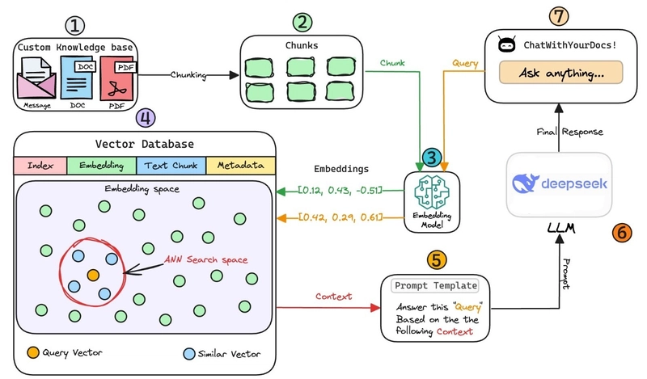
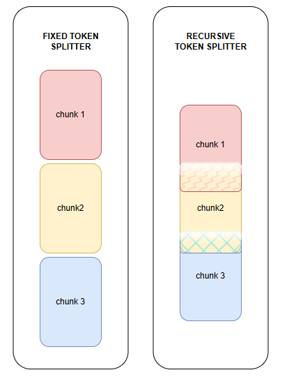
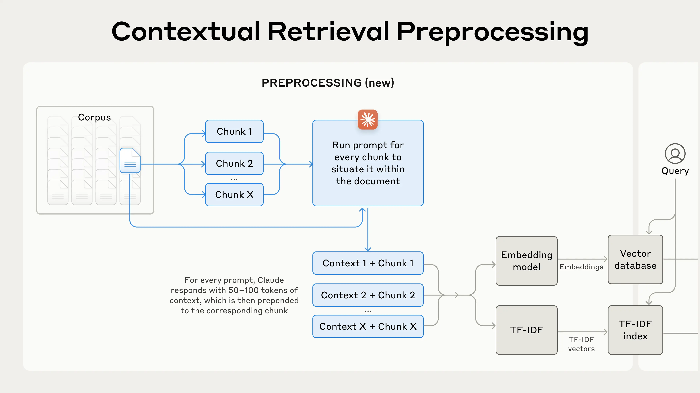
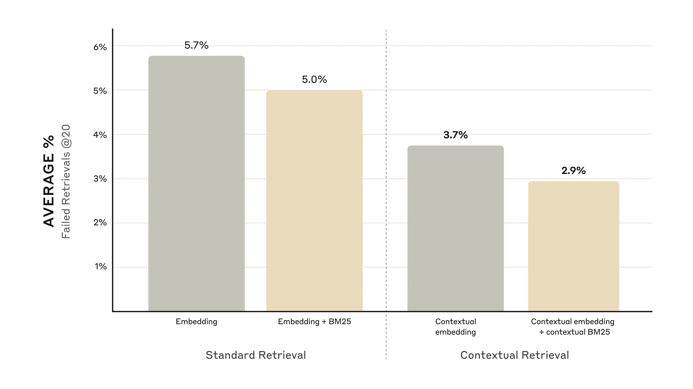
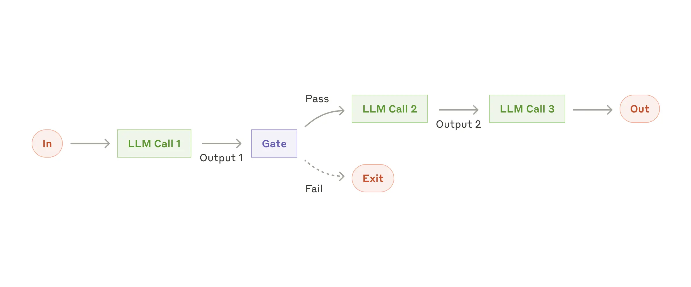

Arquitecturas para el agente IA
Tipos de Arquitecturas
En primer lugar, se describirá la arquitectura empleada en el presente proyecto, brindando una explicación detallada de su funcionamiento. Luego, se mencionarán algunas arquitecturas generales relevantes en el contexto. Cabe destacar que este proyecto tiene un enfoque open source, por lo que, en caso de interés, es posible modificar su estructura o incorporar nuevas capacidades según las necesidades específicas de cada implementación.
RAG (Retrieval Augmented Generation)

Figura 1: Arquitectura Augmented LLM
Este tipo de arquitectura tiene un modelo de lenguaje (LLM) que dispone de capacidades como recuperación de información "retrieval", uso de herramientas externas "tools" y gestión de memoria "memory". Estos modelos no solo cuentan con dichas funciones, sino que también son capaces de utilizarlas activamente: pueden generar sus propias consultas de búsqueda, seleccionar las herramientas más adecuadas y decidir qué información conservar a lo largo de una conversación.
Este es el modelo que vamos a usar como modelo para nuestro proyecto, a continuación se explica mejor cómo es el proceso del mismo.

Figura 2: Arquitectura RAG (Retrieval Augmented Generation)
¿Cómo funciona RAG?
Podemos dividir el funcionamiento de RAG en dos grandes etapas:
1. Carga de la información a la base de datos vectorial
2. Interacción del usuario con el agente
Etapa 1: Carga de información
Comenzamos con una fuente de información, como un archivo PDF. El primer paso es aplicar un proceso llamado chunking, que consiste en dividir el contenido en fragmentos más pequeños (etapa 1). Esto permite un tratamiento más eficiente y preciso, especialmente durante las búsquedas semánticas, donde queremos que el sistema encuentre información en partes específicas del documento, y no en su totalidad.
Luego preparamos estos fragmentos (etapa 2). Existen dos estrategias comunes:
- Fixed Token Splitter: divide el contenido en fragmentos de longitud fija.
- Recursive Token Splitter: realiza divisiones más inteligentes y superpuestas para evitar que se pierda contexto cuando una pregunta coincide justo en los bordes entre fragmentos. Esta técnica permite mantener solapamiento entre fragmentos, como se ilustra en la siguiente imagen.

Figura 3: Fixed vs Recursive splitting
Luego, Cada fragmento se convierte en un vector mediante un modelo de embeddings (etapa 3). Esto transforma el contenido textual en una representación matemática comprensible para el sistema.
Finalmente, los vectores generados se almacenan en una base de datos vectorial (etapa 4), que queda lista para ser consultada durante la etapa de recuperación de información.
Etapa 2: Consulta del usuario
Cuando el usuario realiza una consulta (etapa 7), esta también se convierte en un vector utilizando el mismo modelo de embeddings (etapa 3). Luego, se compara este vector con los almacenados en la base de datos para encontrar los más similares (esto es el retrieval).
Luego, El sistema recupera (etapa 5):
- El contexto relevante desde la base de datos (fragmentos similares).
- La consulta del usuario original.
Ambos elementos se integran en una plantilla de prompt, por ejemplo:
"Sos un buscador especializado en Bibliografía" (esto sería el prompt)
Responde esta "consulta" (lo que pregunta el usuario)
basandote en el siguiente "contexto" (va a ser lo que te devuelva la base vectorial)
Además, en este paso se puede personalizar el comportamiento del agente, indicando que responda con un estilo determinado o como si fuera especialista en un área.
Finalmente, un modelo de lenguaje (LLM) preentrenado toma ese prompt completo (contexto + consulta) y genera la respuesta final para el usuario (etapa 6).
Es importante destacar que el modelo ya está entrenado previamente, ya que realizar un entrenamiento desde cero suele ser costoso o técnicamente complejo. Por eso, es importante elegir un modelo que sea eficiente para el uso que le daremos.
Contextual RAG
El Contextual RAG (Retrieval Augmented Generation) es una evolución del RAG tradicional que mejora significativamente la precisión y relevancia de las respuestas mediante la incorporación de contexto adicional durante el proceso de recuperación. A diferencia del RAG estándar, que busca fragmentos similares basándose únicamente en la similitud semántica, el Contextual RAG considera múltiples factores para determinar qué información es verdaderamente relevante para la consulta del usuario. La arquitectura se puede ver en la siguiente figura:

Figura 4: Arquitectura Contextual RAG
El Contextual RAG es una arquitectura desarrollada en 2024 que supera una limitación histórica: la capacidad de procesar documentos completos de una sola vez. Aunque su funcionamiento base es similar al RAG tradicional, introduce una etapa adicional de procesamiento contextual. En esta etapa, cada fragmento (chunk) se analiza en relación con el documento completo mediante un prompt estructurado:
<document>
{{WHOLE_DOCUMENT}}
</document>
Here is the chunk we want to situate within the whole document
<chunk>
{{CHUNK_CONTENT}}
</chunk>
Please give a short succinct context to situate this chunk within the overall document for the purposes of improving search retrieval of the chunk. Answer only with the succinct context and nothing else.
Este proceso enriquece la base de datos vectorial al almacenar no solo el fragmento original, sino también el contexto generado que lo sitúa dentro del documento completo.
Ventajas sobre RAG tradicional:
- Mayor precisión: Al considerar el contexto completo, reduce las respuestas fuera de tema o irrelevantes.
- Mejor coherencia: Mantiene una línea de pensamiento más consistente en las respuestas.
- Respuestas más completas: Al entender mejor el contexto, puede proporcionar información más relevante y útil.
Desventajas sobre RAG tradicional:
- Mayor complejidad: Requiere un procesamiento adicional y una base de datos vectorial más grande.
- Latencia: Puede ser más lento debido al procesamiento adicional.
Comparación entre RAG tradicional y Contextual RAG
Los resultados de la comparación entre RAG tradicional y Contextual RAG muestran una mejora significativa en la precisión de recuperación: el uso de Contextual Embeddings redujo la tasa de fallos en la recuperación de los 20 fragmentos más relevantes en un 35%, pasando de un 5.7% a un 3.7% de fallos. Esto demuestra que el procesamiento contextual adicional mejora sustancialmente la calidad de las búsquedas. (en las graficas aparece tambien BM25, que es un modelo de recuperación de información que se basa en la frecuencia de las palabras en el documento pero no lo vamos a usar)

Figura 5: Comparación entre RAG (embedding) y CRAG (contextual embedding)
Prompt chaining

Figura 6: Arquitectura Prompt chaining
El encadenamiento de prompts descompone una tarea en una secuencia de pasos, donde cada llamada a un modelo de lenguaje procesa la salida de la anterior. Este flujo de trabajo es ideal para situaciones en las que la tarea puede dividirse de forma clara y sencilla en subtareas fijas. El objetivo principal es sacrificar algo de latencia a cambio de una mayor precisión, haciendo que cada llamada al modelo sea una tarea más simple.
Routing

Figura 7: Arquitectura Routing
El enrutamiento clasifica una entrada y la dirige a una tarea de seguimiento especializada. Este enfoque permite una clara separación de responsabilidades y la creación de prompts más específicos y eficaces. Sin esta estructura, optimizar el rendimiento para un tipo de entrada podría perjudicar el desempeño en otros casos. El enrutamiento resulta especialmente útil en tareas complejas con categorías bien diferenciadas, donde cada una puede ser tratada de forma más eficiente por separado. La clasificación inicial puede realizarse mediante un modelo de lenguaje o utilizando métodos tradicionales de clasificación.
Parallelization

Figura 8: Arquitectura Parallelization
Los LLMs pueden abordar múltiples tareas de forma simultánea, y sus resultados pueden combinarse posteriormente mediante programación. Este enfoque, conocido como paralelización, se presenta en dos formas principales:
- Seccionamiento: consiste en dividir una tarea en subtareas independientes que se ejecutan en paralelo.
- Votación: implica ejecutar la misma tarea varias veces para obtener resultados variados y seleccionar el más adecuado.
La paralelización es especialmente útil cuando las subtareas pueden procesarse simultáneamente para mejorar la velocidad, o cuando se requieren múltiples perspectivas para obtener respuestas más confiables. En tareas complejas con múltiples dimensiones, los LLMs suelen ofrecer mejores resultados cuando cada aspecto se gestiona por separado, permitiendo que cada parte reciba una atención más enfocada.
Orchestrator-workers

Figura 9: Arquitectura Orchestrator-workers
En el flujo de trabajo de orquestador y trabajadores, un LLM central actúa como orquestador: descompone dinámicamente las tareas, las asigna a LLMs especializados (trabajadores) y luego sintetiza sus respuestas. Aunque este enfoque puede parecer similar a la paralelización, su diferencia clave radica en la flexibilidad: las subtareas no están predefinidas, sino que son generadas en tiempo real por el orquestador según la naturaleza de la tarea.
Evaluator-optimizer

Figura 10: Arquitectura Evaluator-optimizer
En el flujo de trabajo de evaluador-optimizador, una instancia de LLM genera una respuesta, mientras que otra evalúa su calidad y proporciona retroalimentación, formando un ciclo iterativo. Este enfoque resulta efectivo cuando se disponen de criterios de evaluación bien definidos y cuando la mejora progresiva aporta un valor tangible.